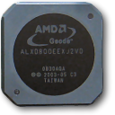

More maybe's and what-if's for today is here: One Laptop Per Child (OLPC) project is mulling whether replacing the Geode chip on their laptop with an ARM one would make sense.
(Note this is Negroponte saying 'maybe' on a news interview which amounts to nothing concrete most likely)
It caught my attention because AMD Geode is something we've also been testing with on our reference implementation. There's been some interest in ARM based hardware, it's a subject that comes up regularly on the chat. Price and power consumption are the strong arguments for it – on the downside software support is a bit trickier (not impossible) due to x86 dominance as the de facto chip architecture.
The other factor weighing in on the argument is AMD's decision to not develop further design for the Geode line.
OLPC's sticky point seems to be their desire to have Microsoft Windows on their laptop which is hard to come by on an ARM-based architecture.
OLPC's goal is to extend the battery life of the XO-2 laptop while building in more functionality than is in the XO-1, said Ed McNierney, chief technology officer at OLPC. OLPC officials said Arm-based integrated chips will draw less power than x86 integrated chips while building in functionality such as graphics and wireless networking.
Also, this one bit close to the end was intriguing:
OLPC can't implement all its ideas in XO-2, so it ultimately wants to "open source" the hardware design to other PC makers for use in building devices, McNierney said. He hopes that opening up the hardware design will spur the development of a "rich family of devices" that accelerate the adoption of the XO-2 technology.
{kind=link}